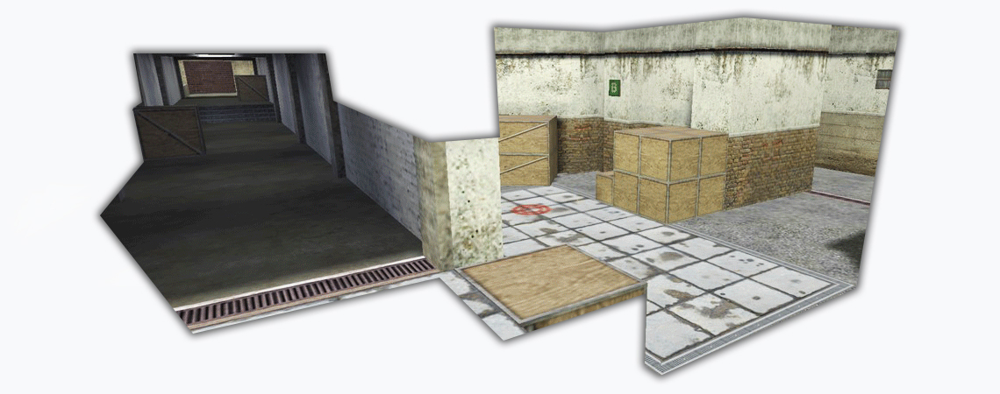
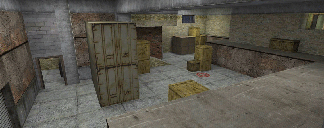
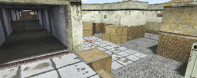
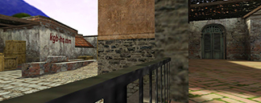
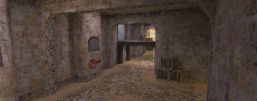
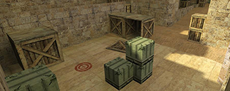
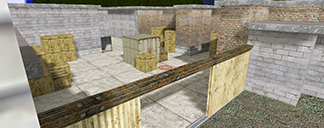
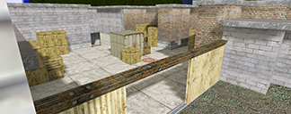

Welcome to LOZOMAPS
Home to some of the balkan's most popular custom (Half Life) Counter-Strike 1.6 Maps.
Here you will find my latest releases and archived maps.
Maps:
-

de_fact
Prva mapa. Inspiracija po ugledu na mapu "pa_fact"
Ova mapa je napravljena 2006. godine
DOWNLOAD
-

de_kgb_map
Mapa napravljena 2009. za KGB Community uz podršku KGB-Hostinga.
Popularna mapa sa dugačkim središnjim mostom
DOWNLOAD
-

de_kgb_2012
Mapa pravljena za KGB Community uz podšku KGB-Hostinga
Godina izgradnje je 2011.
DOWNLOAD
-

de_avangard
Mapa pravljena za Avangard Community.
Ovo je klasična public mapa sa širokim prolazima. Godina izgradnje je 2012.
DOWNLOAD
-

de_barcelona
Mapa napravljena 2013 za "Barcelona Community".
Korišćene su klasične dust teksture.
DOWNLOAD
- 
de_mini_mill
Ideja mape je nastala ispiracijom na de_cpl_mill.
Mapa je napravljena za manji broj igrača, 2 vs 2 ili 3 vs 3
DOWNLOAD
Branko Lozo | All rights reserved 2018. - 